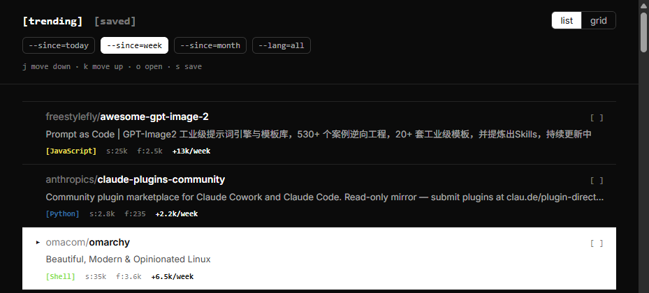

Reviving a Chrome extension Manifest V2 killed
githunt replaced your new tab with trending GitHub repos. I liked using it, then it stopped working, and the reason turned out to be simple: Chrome disabled Manifest V2 extensions entirely, and githunt's manifest declared manifest_version: 2. No code rot, no broken dependency, just a platform that moved out from under it in 2018-era code.
What you can expect below: a from-scratch Manifest V3 rebuild, a real bug the rebuild introduced and then fixed with an automated design critique, and a concrete number for what "no pagination" actually meant once I tried to fix it.

Why it was actually broken
Manifest V2's browser_action and manifest_version: 2 aren't just old syntax, they're keys Chrome's extension loader now refuses outright. Rebuilding meant a real Manifest V3 manifest: chrome_url_overrides.newtab, host_permissions instead of the old wildcard permission scheme, and no more relying on a persistent background page.
One thing worth keeping from the original and one thing worth dropping. Worth keeping: it never had an official trending API to call, because there isn't one. Worth dropping: githunt approximated "trending" through the GitHub Search API, sorted by star count within a creation-date window. That's a different thing from trending. My rebuild scrapes github.com/trending directly instead, which is what "trending" actually means (recent star velocity, not just total stars on new repos), and it works in Manifest V3 without a CORS proxy because host_permissions grants the extension cross-origin fetch rights the browser would otherwise block.
A critique caught a real bug, not just a taste problem
Once the extension worked again, I ran it through an automated design critique (two independent passes, one reading the code, one scripting a real browser against the built extension). Score: 23 out of 36. The finding that mattered wasn't a taste note, it was a genuine defect: the keyboard-selected row's highlight was supposed to invert the row's colors, foreground for background, terminal-style. Instead the highlight was invisible.
The cause was a CSS quirk I hadn't hit before. I'd written a rule that both set a background from var(--ink) and redefined --ink for that same element's children:
.repo--selected {
background: var(--ink);
--ink: var(--paper);
}CSS custom properties don't have a declaration order the way JavaScript statements do. Both lines apply to the same element, so var(--ink) in the background resolves using the already-redefined value, not the one that existed before this rule ran. The background silently became the same color as everything else. Fix: a second variable, --row-ink, defined once at the page root and never redeclared, so the background has something stable to point at while the children still get the inverted color.
"Load more" turned out to be a wrong question
Once the redesign settled, the next ask was to load more repos. github.com/trending has no pagination. One fetch is the entire result GitHub's own page shows, typically 19 to 25 repositories depending on the day. There's no second page to request.
So "more" had to come from combining separate fetches instead of paginating one. The rebuild now fetches the two time windows you didn't pick (today, this week, this month) for the same language filter, and, when no language filter is set, five popular languages for the same time window, all in parallel, then merges in whatever wasn't already in the primary result. Each repo remembers which fetch it actually came from, so a repo pulled in from "this month" still says "this month" next to its count instead of silently borrowing whatever window you have selected.
Concrete result: the default view (weekly, all languages) went from 21 repos to 119.
What I'd change next
Two things I know are wrong and didn't fix. The footer's Crewio wordmark is locked to a light background regardless of theme, because no dark-mode variant of the mark exists yet, and recoloring a brand mark with a CSS filter is off the table. And five fixed "popular languages" for the merge step is a guess, not a measurement. It should probably be based on what showed up most often across the last several fetches instead of a hardcoded list.
What I'd keep without changing: scraping the real trending page instead of approximating it through search, and the rule that every merged-in repo has to say where it actually came from. Both were cheap decisions that would have been easy to skip and would have quietly made the tool worse.